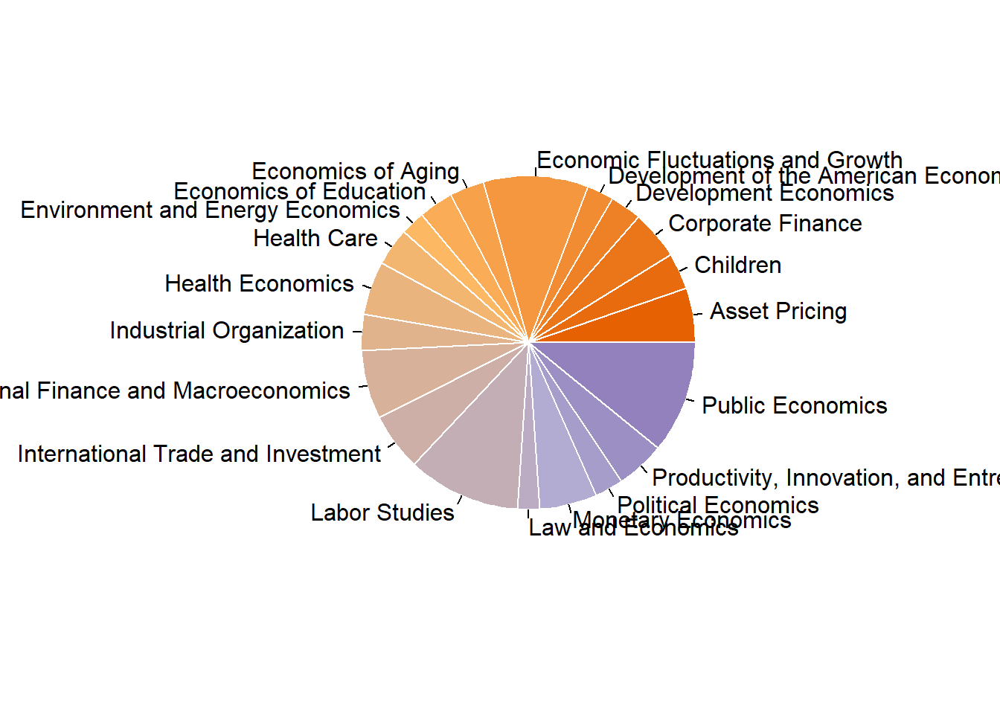

## Warning: package 'here' was built under R version 4.0.5## here() starts at C:/Users/Vivianchu/Documents/UGA/Courses/Fall 2021/EPID_BIOS 8060 Modern Applied Data Analysis/MADA2021/TZUCHUNCHU-MADA-portfolio## Warning: package 'tidytuesdayR' was built under R version 4.0.5## Warning: package 'nberwp' was built under R version 4.0.5## Registered S3 method overwritten by 'pryr':
## method from
## print.bytes Rcpp## For best results, restart R session and update pander using devtools:: or remotes::install_github('rapporter/pander')##
## Attaching package: 'summarytools'## The following object is masked from 'package:tibble':
##
## viewlibrary(RColorBrewer) # prepare a color palette for pie chart
library(lubridate) # used to work with datetime variables ##
## Attaching package: 'lubridate'## The following objects are masked from 'package:base':
##
## date, intersect, setdiff, union# This loads the readme and all the datasets for the week of interest
# Either ISO-8601 date or year/week works
# tuesdata <- tidytuesdayR::tt_load(2021, week = 40)For some reason, I couldn’t get the data directly using the tidytuesdayR package and it seems like only the week 39 data were available for importing. Therefore, I will import these data manually.
papers <- readr::read_csv('https://raw.githubusercontent.com/rfordatascience/tidytuesday/master/data/2021/2021-09-28/papers.csv')
authors <- readr::read_csv('https://raw.githubusercontent.com/rfordatascience/tidytuesday/master/data/2021/2021-09-28/authors.csv')
programs <- readr::read_csv('https://raw.githubusercontent.com/rfordatascience/tidytuesday/master/data/2021/2021-09-28/programs.csv')
paper_authors <- readr::read_csv('https://raw.githubusercontent.com/rfordatascience/tidytuesday/master/data/2021/2021-09-28/paper_authors.csv')
paper_programs <- readr::read_csv('https://raw.githubusercontent.com/rfordatascience/tidytuesday/master/data/2021/2021-09-28/paper_programs.csv')papers %>%
write_csv("tidytuesday/data/papers.csv")
authors %>%
write_csv("tidytuesday/data/authors.csv")
programs %>%
write_csv("tidytuesday/data/programs.csv")
paper_authors %>%
write_csv('tidytuesday/data/paper_authors.csv')
paper_programs %>%
write_csv("tidytuesday/data/paper_programs.csv")
joined_df <- left_join(papers, paper_authors) %>%
left_join(authors) %>%
left_join(paper_programs) %>%
left_join(programs)%>%
mutate(
catalogue_group = str_sub(paper, 1, 1),
catalogue_group = case_when(
catalogue_group == "h" ~ "Historical",
catalogue_group == "t" ~ "Technical",
catalogue_group == "w" ~ "General"
),
.after = paper
) ## Joining, by = "paper"## Joining, by = "author"## Joining, by = "paper"## Joining, by = "program"## [1] 130081 12## tibble [130,081 x 12] (S3: tbl_df/tbl/data.frame)
## $ paper : chr [1:130081] "w0001" "w0002" "w0003" "w0004" ...
## $ catalogue_group : chr [1:130081] "General" "General" "General" "General" ...
## $ year : num [1:130081] 1973 1973 1973 1973 1973 ...
## $ month : num [1:130081] 6 6 6 7 7 7 8 9 9 9 ...
## $ title : chr [1:130081] "Education, Information, and Efficiency" "Hospital Utilization: An Analysis of SMSA Differences in Hospital Admission Rates, Occupancy Rates and Bed Rates" "Error Components Regression Models and Their Applications" "Human Capital Life Cycle of Earnings Models: A Specific Solution and Estimation" ...
## $ author : chr [1:130081] "w0001.1" "w0002.1" "w0003.1" "w0004.1" ...
## $ name : chr [1:130081] "Finis Welch" "Barry R Chiswick" "Swarnjit S Arora" "Lee A Lillard" ...
## $ user_nber : chr [1:130081] "finis_welch" "barry_chiswick" "swarnjit_arora" NA ...
## $ user_repec : chr [1:130081] NA "pch425" NA "pli669" ...
## $ program : chr [1:130081] NA NA NA NA ...
## $ program_desc : chr [1:130081] NA NA NA NA ...
## $ program_category: chr [1:130081] NA NA NA NA ...## paper catalogue_group year month
## Length:130081 Length:130081 Min. :1973 Min. : 1.000
## Class :character Class :character 1st Qu.:2005 1st Qu.: 4.000
## Mode :character Mode :character Median :2013 Median : 6.000
## Mean :2010 Mean : 6.515
## 3rd Qu.:2018 3rd Qu.: 9.000
## Max. :2021 Max. :12.000
## title author name user_nber
## Length:130081 Length:130081 Length:130081 Length:130081
## Class :character Class :character Class :character Class :character
## Mode :character Mode :character Mode :character Mode :character
##
##
##
## user_repec program program_desc program_category
## Length:130081 Length:130081 Length:130081 Length:130081
## Class :character Class :character Class :character Class :character
## Mode :character Mode :character Mode :character Mode :character
##
##
## missing_table <- sapply(combo_df, function(x){
freq <- sum(is.na(x))
perc <- round(sum(is.na(x))/length(x)*100,2)
return(c(freq, perc))
})
rownames(missing_table) <- c("freq", "perc")
missing_table## paper catalogue_group year month title author name user_nber user_repec
## freq 0 0 0 0 0 0 0 2112.00 47158.00
## perc 0 0 0 0 0 0 0 1.62 36.25
## program program_desc program_category
## freq 530.00 530.00 1516.00
## perc 0.41 0.41 1.17There are 130,081 rows and 12 variables in the combo data. The data type for each variable looks correct, but there are missingness in the data. Program and program description (basically the same variable) have most of the missing values (41%). In order to simplify the further data analysis, I will exclude these rows.
combo_df2 <- combo_df %>%
dplyr::filter(!is.na(program))
missing_table <- sapply(combo_df2, function(x){
freq <- sum(is.na(x))
perc <- round(sum(is.na(x))/length(x)*100,2)
return(c(freq, perc))
})
rownames(missing_table) <- c("freq", "perc")
missing_table## paper catalogue_group year month title author name user_nber user_repec
## freq 0 0 0 0 0 0 0 2017.00 46853.00
## perc 0 0 0 0 0 0 0 1.56 36.17
## program program_desc program_category
## freq 0 0 986.00
## perc 0 0 0.76We can see that there is still 0.76 % of missing values in program_category. I will also remove these rows.
combo_new <- combo_df2 %>%
dplyr::filter(!is.na(program_category))
missing_table <- sapply(combo_new, function(x){
freq <- sum(is.na(x))
perc <- round(sum(is.na(x))/length(x)*100,2)
return(c(freq, perc))
})
rownames(missing_table) <- c("freq", "perc")
missing_table## paper catalogue_group year month title author name user_nber user_repec
## freq 0 0 0 0 0 0 0 2006.00 46438.00
## perc 0 0 0 0 0 0 0 1.56 36.12
## program program_desc program_category
## freq 0 0 0
## perc 0 0 0Now, we have the complete data for all columns except for user_nber and user_repec, but I will not use these variables in the following analysis. Hence, I will just ignore these two variables for now and keep it as it is.
combo_new %>%
ggplot(aes(x = year, fill = catalogue_group)) +
geom_histogram(position = "stack", binwidth=2) It looks like there is a rising trend in terms of the number of publications over time and most of the publications were just general type.
## Frequencies
##
## Freq % Valid % Valid Cum. % Total % Total Cum.
## ---------------------------------------------------- -------- --------- -------------- --------- --------------
## Labor Studies 14084 10.95 10.95 10.95 10.95
## Public Economics 13967 10.86 21.82 10.86 21.82
## Economic Fluctuations and Growth 13113 10.20 32.02 10.20 32.02
## International Finance and Macroeconomics 8570 6.67 38.68 6.67 38.68
## International Trade and Investment 7125 5.54 44.23 5.54 44.23
## Monetary Economics 7121 5.54 49.76 5.54 49.76
## Asset Pricing 6804 5.29 55.06 5.29 55.06
## Health Economics 6671 5.19 60.25 5.19 60.25
## Corporate Finance 6153 4.79 65.03 4.79 65.03
## Productivity, Innovation, and Entrepreneurship 6084 4.73 69.76 4.73 69.76
## Health Care 4678 3.64 73.40 3.64 73.40
## Children 4502 3.50 76.90 3.50 76.90
## Industrial Organization 4492 3.49 80.40 3.49 80.40
## Economics of Education 4311 3.35 83.75 3.35 83.75
## Economics of Aging 4237 3.30 87.05 3.30 87.05
## Development Economics 3849 2.99 90.04 2.99 90.04
## Political Economics 3557 2.77 92.81 2.77 92.81
## Development of the American Economy 3370 2.62 95.43 2.62 95.43
## Environment and Energy Economics 3084 2.40 97.83 2.40 97.83
## Law and Economics 2793 2.17 100.00 2.17 100.00
## <NA> 0 0.00 100.00
## Total 128565 100.00 100.00 100.00 100.00coul <- brewer.pal(4, "PuOr")
# Add more colors to this palette
coul <- colorRampPalette(coul)(25)
program.data <- combo_new %>%
count(program_desc)
pie(x = program.data$n, label = program.data$program_desc, border="white", col=coul)
## function (x, labels = names(x), edges = 200, radius = 0.8, clockwise = FALSE,
## init.angle = if (clockwise) 90 else 0, density = NULL, angle = 45,
## col = NULL, border = NULL, lty = NULL, main = NULL, ...)
## {
## if (!is.numeric(x) || any(is.na(x) | x < 0))
## stop("'x' values must be positive.")
## if (is.null(labels))
## labels <- as.character(seq_along(x))
## else labels <- as.graphicsAnnot(labels)
## x <- c(0, cumsum(x)/sum(x))
## dx <- diff(x)
## nx <- length(dx)
## plot.new()
## pin <- par("pin")
## xlim <- ylim <- c(-1, 1)
## if (pin[1L] > pin[2L])
## xlim <- (pin[1L]/pin[2L]) * xlim
## else ylim <- (pin[2L]/pin[1L]) * ylim
## dev.hold()
## on.exit(dev.flush())
## plot.window(xlim, ylim, "", asp = 1)
## if (is.null(col))
## col <- if (is.null(density))
## c("white", "lightblue", "mistyrose", "lightcyan",
## "lavender", "cornsilk")
## else par("fg")
## if (!is.null(col))
## col <- rep_len(col, nx)
## if (!is.null(border))
## border <- rep_len(border, nx)
## if (!is.null(lty))
## lty <- rep_len(lty, nx)
## angle <- rep(angle, nx)
## if (!is.null(density))
## density <- rep_len(density, nx)
## twopi <- if (clockwise)
## -2 * pi
## else 2 * pi
## t2xy <- function(t) {
## t2p <- twopi * t + init.angle * pi/180
## list(x = radius * cos(t2p), y = radius * sin(t2p))
## }
## for (i in 1L:nx) {
## n <- max(2, floor(edges * dx[i]))
## P <- t2xy(seq.int(x[i], x[i + 1], length.out = n))
## polygon(c(P$x, 0), c(P$y, 0), density = density[i], angle = angle[i],
## border = border[i], col = col[i], lty = lty[i])
## P <- t2xy(mean(x[i + 0:1]))
## lab <- as.character(labels[i])
## if (!is.na(lab) && nzchar(lab)) {
## lines(c(1, 1.05) * P$x, c(1, 1.05) * P$y)
## text(1.1 * P$x, 1.1 * P$y, labels[i], xpd = TRUE,
## adj = ifelse(P$x < 0, 1, 0), ...)
## }
## }
## title(main = main, ...)
## invisible(NULL)
## }
## <bytecode: 0x000000002556a478>
## <environment: namespace:graphics>The frequency table shows that top 3 most frequently published programs are “Labor Studies”, “Public Economics” and “Economic Fluctuations and Growth”.
combo_new %>%
ggplot(aes(x = year, fill = program_category)) +
geom_area(stat="bin") +
scale_fill_brewer(palette="Set3") +
theme_bw() +
ggtitle("Frequency of publication by program categories over time")## `stat_bin()` using `bins = 30`. Pick better value with `binwidth`.According to the stacked area chart, we can see that most of the economic papers were concerning topics on the macro and international level from 1980 to 1990. On the contrary, microeconomics-related studies were published the most in the past 10 years, followed by macro/international field and then finance. Furthermore, it looks like there was an increasing trend of publications regarding macro/international field right around 2010, which got me thinking whether this pattern has something to do with the Great Recession lasting from December 2007 to June 2009. Hence, I decided to dive deeper to look at the data within this time period between 2006 and 2010.
# factor program category
reces.period$program_category <- factor(reces.period$program_category, levels = c("Finance","Micro","Macro/International"))
reces.period %>%
group_by(year) %>%
count(program_category) %>%
ggplot(aes(x = year, y = n, fill = program_category)) +
geom_bar(stat = "identity", position = "dodge") +
scale_x_continuous(breaks = seq(2006,2010,1)) +
scale_fill_brewer(palette="Dark2") +
ggtitle("Number of publications by program cateogory between 2006 and 2010") +
ylab("Number of publications") +
xlab("Year") Well, it looks like there were not much fluctuation in number of publications between three categories across five calender years. I wonder if this was because the data was aggregated by year, and maybe the monthly data could provide more insights about the actual trend change.
#Produce a vector of days
dateVec <- seq(from = as.Date("2006-01-01"), to = as.Date("2010-12-01"), by = "months")
ggplot(reces.period.new, aes(x = date, fill = program_category)) +
geom_area(stat="bin") +
scale_x_date(date_breaks = "3 month",
limits = c(min(dateVec), max(dateVec)),
expand=c(0,0)) +
theme(axis.text.x = element_text(angle = 45, hjust=1)) +
scale_fill_brewer(palette="Accent") +
ggtitle("The stacked area chart for number of publications by program category \nbetween between 2006 and 2010, monthly data")## `stat_bin()` using `bins = 30`. Pick better value with `binwidth`.It looks like there there were higher number of publications in certain months. The spikes generally occurred during July and October every year. The number of macro-level studies published seems to be fairly stable over the course of five years. Oops, I just realized that there are duplicated titles due to multiple authors listed on one paper, and this could affect our comparison results. However, one paper could be categorized into more than one group the program and detailed description. I’m not sure what’s the best way to address this issue. I could have created new categories by grouping multiple categories together such as micro/macro, micro/finance, or just categorized these publication with mixed fields into “Other”. For this exercise, I will just keep the current data by focusing on the which topic areas were covered by the published paper even thought it might be from the same article.
reces.period.new %>% ggplot(aes(x = date, fill = program_desc )) +
geom_area(stat="bin", bins = 30) +
scale_x_date(date_breaks = "3 month",
limits = c(min(dateVec), max(dateVec)),
expand=c(0,0)) +
theme(axis.text.x = element_text(angle = 45, hjust=1)) It’s a bit difficult to see the pattern with so many categories. Let’s focus on the program subcategories within Macro or International studies.
reces.period.new %>% filter(program_category == "Macro/International") %>%
ggplot(aes(x = date, fill = program_desc )) +
geom_area(stat="bin", bins = 30) +
scale_x_date(date_breaks = "3 month",
limits = c(min(dateVec), max(dateVec)),
expand=c(0,0)) +
theme(axis.text.x = element_text(angle = 45, hjust=1)) Apparently, economic fluctuations and growth is a major focus during these 5 years, and it looks like that this upward trend will continue. Now, I’m curious to know if that is true. I am gonna plot the same graph but extend to all years.
combo_new %>%
mutate(date = make_date(year, month)) %>%
filter(program_category == "Macro/International") %>%
ggplot(aes(x = year, fill = program_desc )) +
geom_area(stat="bin", bins = 30) +
theme(axis.text.x = element_text(angle = 45, hjust=1)) Based on the plotted graph, there is indeed an increasing trend in number of macroenconomics papers concerning the economic fluctuation and growth over time.